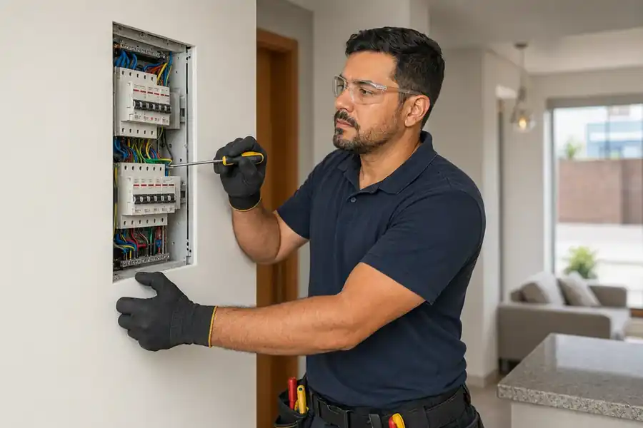
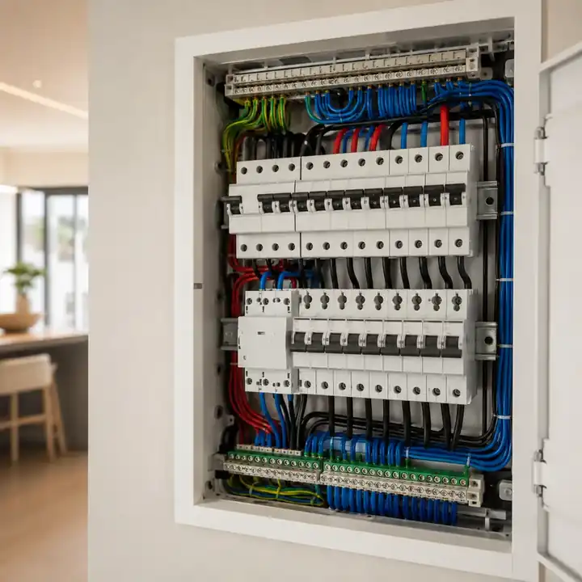
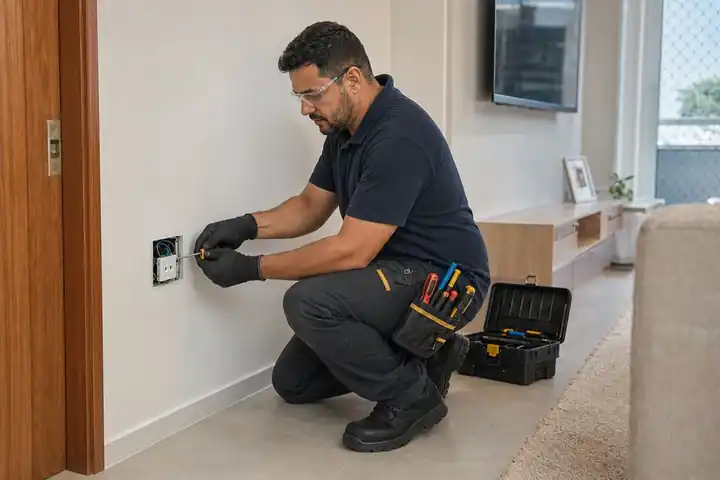
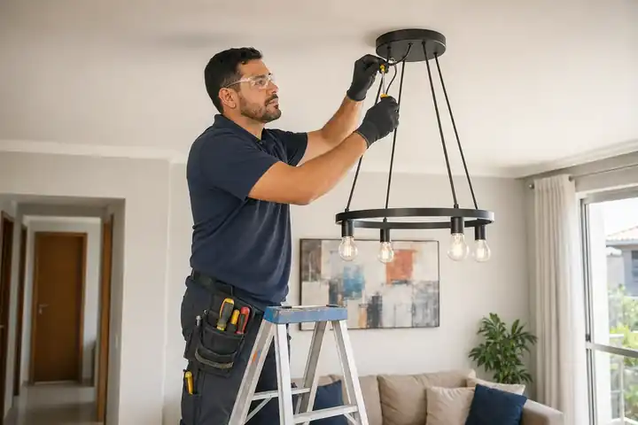
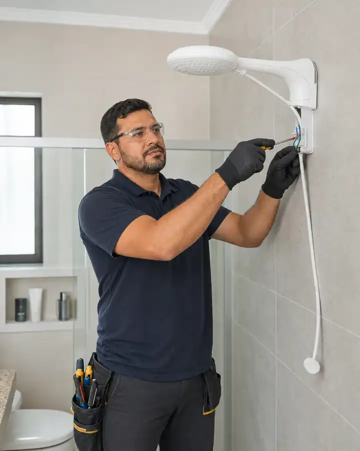
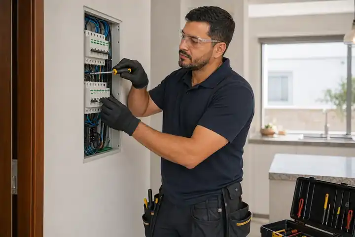
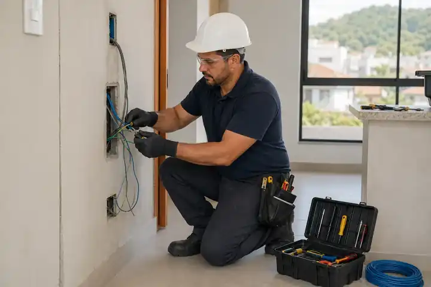
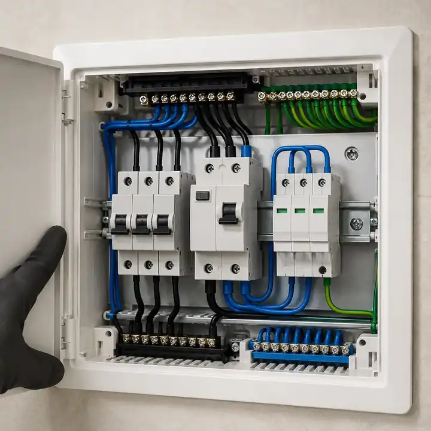
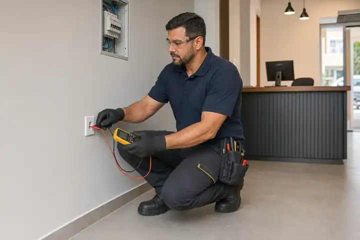
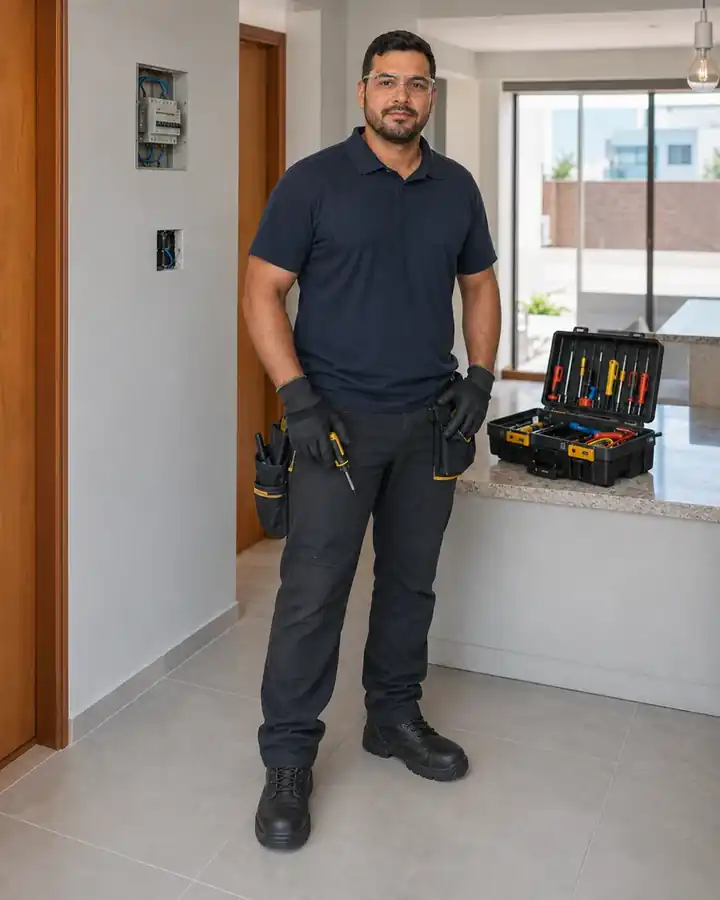

Orçamento antes da execução
SERVIÇOS ELÉTRICOS EM PALHOÇA E REGIÃO
ELETRICISTA EM PALHOÇA
Manutenção, instalações e correções elétricas para resolver desde ajustes do dia a dia até novas instalações.
Atendimento direto com Rafael, do primeiro contato à execução.
Informe seu bairro, explique o serviço e envie fotos ou vídeos quando possível.
Residencial e comércios
Urgências conforme disponibilidade
Palhoça • São José • Florianópolis

Orçamento antes da execução
Residencial e comércios
Urgências conforme disponibilidade
Palhoça • São José • Florianópolis
O QUE POSSO RESOLVER
Serviços para manutenção,instalações e correções elétricas
Em Palhoça e região, o atendimento vai do reparo pontual à instalação de novos pontos e circuitos, sempre começando pela avaliação do que realmente precisa ser corrigido ou instalado.
Quadros elétricos
Organização, manutenção e adequação de quadros elétricos, incluindo troca de componentes e correções na instalação.
SOLICITAR NO WHATSAPPTomadas e novos pontos
Instalação e troca de tomadas, interruptores e novos pontos elétricos para adequar o ambiente ao uso diário.
SOLICITAR NO WHATSAPPIluminação
Instalação e troca de luminárias e pontos de luz, com correções no circuito quando necessário.
SOLICITAR NO WHATSAPPChuveiros e circuitos dedicados
Instalação de chuveiros e preparação de circuitos dedicados, com verificação prévia das condições da instalação.
SOLICITAR NO WHATSAPPManutenção e diagnóstico
Diagnóstico de falhas como disjuntor desarmando, pontos sem energia e aquecimento anormal na instalação.
SOLICITAR NO WHATSAPPFiação, aterramento e proteção
Troca e adequação de fiação, aterramento e dispositivos de proteção como DR e DPS, conforme avaliação.
SOLICITAR NO WHATSAPPOUTRA NECESSIDADE?
CONSULTAR OUTRO SERVIÇO
Não encontrou exatamente o serviço que precisa?
Envie uma foto ou descreva o problema pelo WhatsApp para confirmar se o atendimento se aplica ao seu caso.
ALGO NÃO ESTÁ NORMAL?
PROBLEMAS ELÉTRICOS MERECEM UMA AVALIAÇÃO CUIDADOSA
Se algo está desarmando, aquecendo ou funcionando de forma irregular, o primeiro passo é entender a causa antes de mexer na instalação. Envie pelo WhatsApp uma descrição do problema e, se possível, fotos ou vídeos.
Rafael avalia as informações e orienta o próximo passo; quando for necessária uma visita, o orçamento é apresentado antes de qualquer serviço. Urgências são atendidas conforme disponibilidade dentro do horário de funcionamento.
SINAIS QUE MERECEM ATENÇÃO
- Disjuntor desarmando
- Parte do imóvel sem energia
- Tomada aquecendo
- Cheiro de queimado ou falha elétrica
- Chuveiro com problema
- Curto-circuito interno
TRABALHOS
ALGUNS SERVIÇOS QUE FAZEMPARTE DO ATENDIMENTO
Do quadro elétrico aos pontos de iluminação, estes são alguns exemplos de serviços que podem fazer parte do atendimento.








Tem um serviço parecido para fazer?
Envie uma foto ou descreva o que precisa para Rafael avaliar o atendimento.
COMO FUNCIONA
DO CONTATO AO SERVIÇO CONCLUÍDO
Você explica o que precisa, Rafael avalia o caso e combina cada etapa antes de executar o serviço.
- 01
Conte o que precisa
Descreva pelo WhatsApp o serviço ou problema. Fotos e vídeos ajudam na avaliação inicial quando possível.
- 02
Avaliação
Se não der para entender o caso à distância, Rafael combina uma avaliação presencial antes de definir a solução.
- 03
Orçamento
O valor e o que será executado são apresentados antes do início do serviço, incluindo a combinação sobre materiais.
- 04
Execução e teste
Com o orçamento aprovado, o serviço é executado, testado e explicado antes da finalização.
POR QUE CONFIAR
Processo claro e atendimento direto
- Atendimento direto com o próprio profissional
- Explicação clara antes da execução
- Orçamento antes do serviço
- Organização do local
- Teste final e orientação ao cliente
- Materiais combinados previamente
DEPOIMENTOS DE CLIENTES
O QUE CLIENTES DIZEM SOBRE O ATENDIMENTO
Eletricista em Palhoça para instalações, manutenção e reparos elétricos, com atendimento direto, orçamento claro e serviço bem executado.

RAFAEL MARTINSELETRICISTA EM PALHOÇA
SOBRE MIM
RAFAEL MARTINS, ELETRICISTA EM PALHOÇA
Rafael Martins atua desde 2017 com serviços elétricos em Palhoça e região, atendendo residências, pequenos comércios e demandas do dia a dia com manutenção, instalações e reparos elétricos.
Ao longo do trabalho, busca entender primeiro o que realmente precisa ser resolvido, explicar a situação de forma simples e executar somente o que foi combinado com o cliente.
Organização, cuidado com o local e atenção aos detalhes fazem parte da forma como conduz cada serviço, desde a avaliação inicial até a finalização.
PALHOÇABase de atendimento
DESDE 2017Atuação
RESIDENCIALE pequenos comércios
DIRETOContato com Rafael
Descreva o serviço e envie fotos ou vídeos quando possível.
ÁREA ATENDIDA
ATENDIMENTO EM PALHOÇA E REGIÃO
Com base em Palhoça, Rafael atende por deslocamento em Palhoça, São José e Florianópolis continental para serviços elétricos em residências e pequenos comércios.
01
PALHOÇABASE PRINCIPAL
PaganiPedra BrancaPassa VintePonte do ImaruimBela VistaAririú
02
SÃO JOSÉPOR DESLOCAMENTO
KobrasolCampinasBarreiros
03
FLORIANÓPOLIS CONTINENTALPOR DESLOCAMENTO
EstreitoCoqueirosCapoeiras
LOCALIZAÇÃOPALHOÇA • SANTA CATARINA
DÚVIDAS FREQUENTES
RESPOSTAS RÁPIDAS ANTES DE CHAMAR
Veja as principais dúvidas sobre orçamento, atendimento e serviços elétricos em Palhoça e região.
01Como funciona o orçamento?
O primeiro contato é feito pelo WhatsApp. Quando possível, as informações e fotos enviadas ajudam na avaliação inicial. Se for necessária uma visita, o orçamento é apresentado antes da execução do serviço.
02Quais regiões são atendidas?
O atendimento tem base em Palhoça e também pode ser realizado por deslocamento em São José e Florianópolis continental, conforme disponibilidade.
03Quais serviços elétricos são realizados?
Manutenção e diagnóstico elétrico, quadros e disjuntores, tomadas e novos pontos, iluminação, chuveiros e circuitos dedicados, fiação, aterramento e dispositivos de proteção como DR e DPS.
04Atende residências e pequenos comércios?
Sim. O atendimento contempla residências e pequenos comércios, de acordo com o tipo e a complexidade do serviço.
05Atende urgências?
Sim, dentro do horário de atendimento e conforme disponibilidade. Não há promessa de atendimento imediato ou de chegada em um prazo fixo.
06O atendimento é 24 horas?
Não. O horário é de segunda a sexta, das 08:00 às 18:00, e aos sábados, das 08:00 às 13:00.
07O serviço tem garantia?
As condições de garantia dependem do tipo de serviço e são informadas no orçamento. Não existe um único prazo divulgado para todos os trabalhos.
08Emite nota fiscal?
Sim, mediante solicitação.
09Quais são as formas de pagamento?
Pix, dinheiro, cartão de débito e cartão de crédito. Condições de parcelamento podem variar conforme o valor do serviço.
10Como ficam os materiais do serviço?
Os materiais necessários são combinados antes da execução. Quando preciso, Rafael orienta o que será necessário para que tudo fique definido antes de começar.
Ainda ficou alguma dúvida sobre o seu serviço?
PRECISA DE UM ELETRICISTA?
FALE COM RAFAEL E EXPLIQUE O QUE PRECISA
Atendimento em Palhoça, São José e Florianópolis continental para manutenção, instalações e reparos elétricos.
CONTATO DIRETO COM RAFAEL
Informe seu bairro, descreva o serviço e envie fotos ou vídeos quando possível.